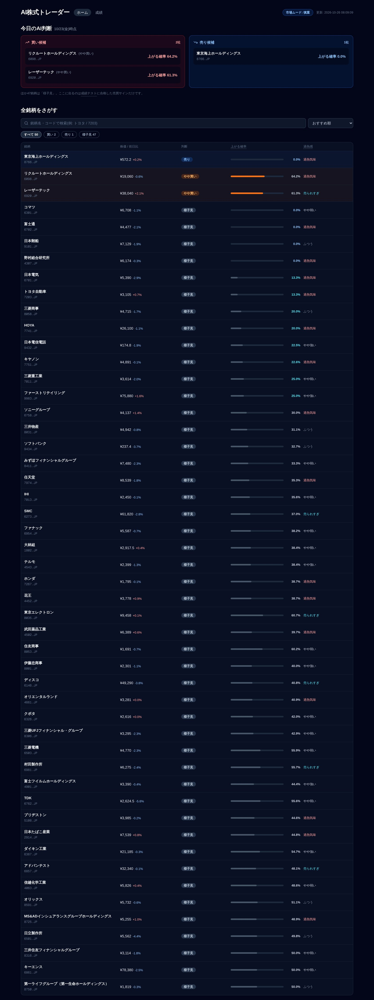
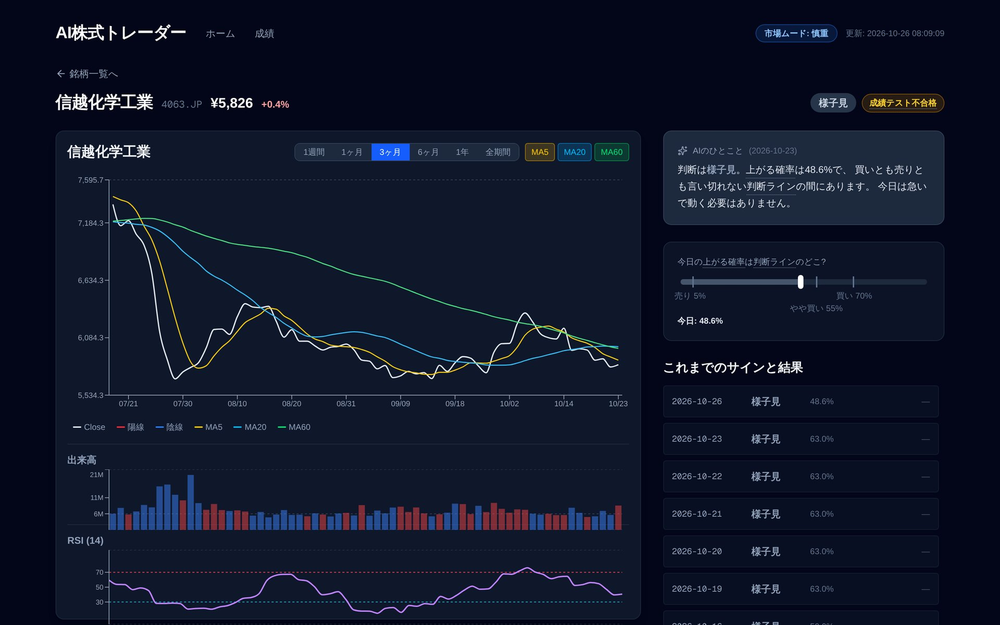
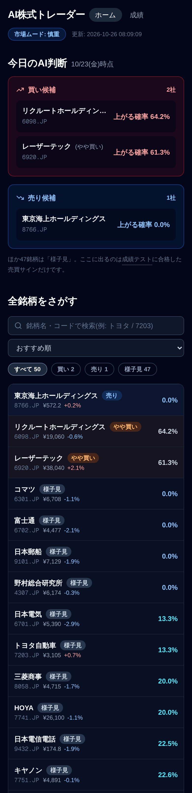

TOKYO · JST
05:59:57
市場が開く、3時間前。
人が眠っているあいだに、AIはもう働きはじめている。
FULLY AUTONOMOUS · JAPANESE EQUITY AI
AI株式トレーダー
株価を学び、判断し、届ける。
そのすべてを、全自動で。
01 — DAILY AUTOPILOT
毎営業日、誰も触らずに回る。
04:30
AI銘柄キュレーション
テクニカルを精査して
監視銘柄を少しずつ入れ替え
06:00
データ取得 → 予測
50銘柄の株価を更新し
学習済みモデルで判断
06:20 / 06:40
自動リトライ
未更新のときだけ
もう一度走り直す
AUTO
ダッシュボード公開
サイトをビルドして配信
朝のダイジェストを通知
12:30
ウォッチドッグ
鮮度と品質を監査
異常はIssueを自動起票
土
モデル再学習
土
ファンダ分析・週次レポート
日
ユニバース見直し
隔週
候補プール見直し
02 — HOW IT LEARNS
株価が“学習”されるしくみ。
STEP 1
日足データ
異常値を検証して取り込み
失敗時は別ソースへ自動切替
STEP 2
45の特徴量
TECHNICAL ×34
リターン 1〜20日
移動平均乖離
RSI
MACD
ボリンジャー
ATR
出来高
ローソク足
曜日・月末
MACRO ×11
USD/JPY
TOPIX
日経平均
日経VI
JGB10年
STEP 3
LightGBM
勾配ブースティング木が
5営業日先の「上昇」を学習
STEP 4
確率を較正
isotonic回帰で「70%」が
本当に70%になるよう補正
OUTPUT
上がる確率
0.0%
売
弱売
様子
弱買
買
5段階のシグナルへ
価格 × 指標 × マクロ
を毎朝読み込み、確率という“正直な数字”に変える。
03 — LABELING
“正解”の定義も、自動で。
トリプルバリア法 ― 5営業日以内に、どちらの壁に先に触れたか。
利確ライン +1.5 ATR
損切りライン −1.0 ATR
期限 5営業日
先に利確ライン → 「上昇」 1
先に損切りライン → 0
※ ATR＝その銘柄の“ふだんの値動きの幅”。同じ幅が、実際の売買の利確・損切りの目安にもなる。
04 — KPI GATE
勝てる証拠がなければ、動かない。
合格基準（未来を見ない検証で判定）
年率リターン CAGR
≥ 3%
✓
最大ドローダウン
≤ 25%
✓
シャープレシオ
≥ 0.20
✓
1日あたり純リターン
> 0.01%
✓
往復取引数
≥ 10回
✓
BUY
BUY
HOLD
基準未達
合格 → シグナル発行
コスト・スリッページ込みで検証し、
基準に届かない銘柄は強制的に HOLD
。シグナルの“質”を自分で守る。
05 — SELF-RENEWAL
毎週、自分で学び直す。
WEEKLY LOOP
∞
06 — NEVER STOP
どこかが落ちても、シグナルは止まらない。
毎朝のシグナル生成 ― 縮退しながら必ず継続
07 — DESIGN
見える化まで、ぜんぶ自動。
🔒 AI株式トレーダー — ホーム

🔒 AI株式トレーダー — 銘柄詳細


朝のダイジェスト · 06:0X
今日のAI判断：買い候補 2社
リクルートHD 上がる確率
64.2%
レーザーテック 上がる確率
61.3%
利確・損切り・期限の目安つき
今日のAI判断
上がる確率をひと目で
全50銘柄を検索・並び替え
チャート × MA × RSI
スマホでも見やすく
AIのひとこと・サインと結果
08 — BY THE NUMBERS
数字で見る、全自動。
0
監視銘柄
AIが毎日入れ替えを検討
0
特徴量
テクニカル34 ＋ マクロ11
0
自動ワークフロー
日次・週次・月次・四半期
0
段階のシグナル
買い〜売り、未達なら様子見
0
テストスイート
変更のたびにCIで検証
0
毎日の手作業
予測から公開・通知まで
眠っているあいだに、
学び、判断し、
届ける。
AI株式トレーダー
AUTONOMOUS · CALIBRATED · GATED
Python
LightGBM
GitHub Actions
PostgreSQL
Next.js
Claude
※ 本動画はシステムの仕組みを紹介するものであり、特定銘柄の推奨や投資助言ではありません。
AI株式トレーダー
01
/ 08
⏸ 一時停止
↺ 最初から